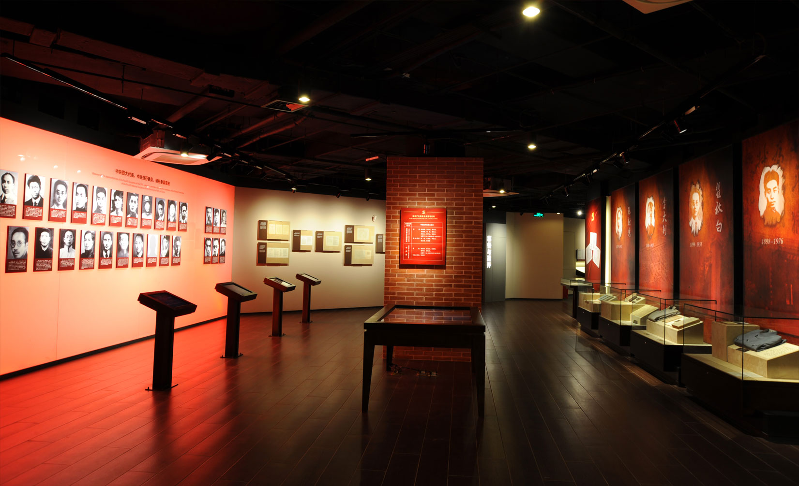

中共四大纪念馆
The communist party of China's "big four" memorial
中共四大纪念馆位于上海市虹口区四川北路绿地公园内，建筑面积为3180平方米，展览面积约1500平方米，由序厅、 主展厅、影视厅和副展厅等组成。中共四大原址在虹口区东宝兴路254弄28支弄8号，当年的房屋已于一二八事变中毁于战火。2006年，虹口区在多伦路215号建立了186平方米的中共四大史料陈列馆。
-

开馆时间
9:00——11:30（11:00停止入场）
13:00——16:00（16:00停止入场）
-
纪念馆地址
上海市虹口区四川北路1468号
-
交通线路
轨道交通三、四号线宝山路站
轨道交通十号线四川北路站
公交21、167、939、848、
854、928、65路四川北路虬江路站
中共四大纪念馆
The communist party of China's "big four" memorial
- 
中共“四大”纪念馆1
中共“四大”纪念馆2
中共“四大”纪念馆3
中共四大纪念馆位于上海市虹口区四川北路绿地公园内，建筑面积为3180平方米，展览面积约1500平方米，由序厅、主展厅、影视厅和副展厅等组成。中共“四大”原址在虹口区东宝兴路254弄28支弄8号，当年的房屋已于一二八事变中毁于战火。2006年，虹口区在多伦路215号建立了186平方米的中共“四大”史料陈列馆。而异地重建的中共“四大”纪念馆，一方面将弥补中共“四大”史料陈列馆规模较小的遗憾，另一方面还将弥补建国前在国内召开的6次代表大会唯有“四大”没有建立正式纪念馆的遗憾。2014年3月成为本市中小学生3月起刷学生证可进78家社会场馆的场馆之一
memorial hall OUTSIDE 纪念馆外观
建筑面积为3180平方米，展览面积约1500平方米。
纪念馆各展厅
讲述会议
About the meeting
中共“四大”纪念馆在设计布展过程中，将始终贯穿“事为魂、史为桥、讲述会议”的理念，以党史知识与文化内涵为血脉，凸显中共“四大”的重要意义。
活动概述
SUMMARY OF ACTIVITIES
中共“四大”纪念馆位于上海市虹口区四川北路绿地公园内，建筑面积为3180平方米，展览面积约1500平方米，由序厅、主展厅、影视厅和副展厅等组成。中共“四大”原址在虹口区东宝兴路254弄28支弄8号，当年的房屋已于一二八事变中毁于战火。2006年，虹口区在多伦路215号建立了186平方米的中共“四大”史料陈列馆。而异地重建的中共“四大”纪念馆，一方面将弥补中共“四大”史料陈列馆规模较小的遗憾，另一方面还将弥补建国前在国内召开的6次代表大会唯有“四大”没有建立正式纪念馆的遗憾。2014年3月成为本市中小学生3月起刷学生证可进78家社会场馆的场馆之一